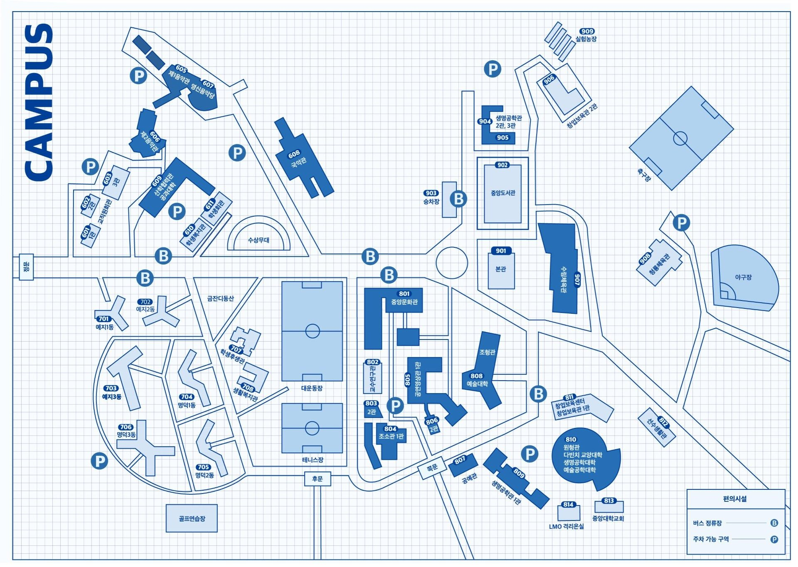

招生指南
游戏内容与动画专业是艺术学院全球艺术学部的本科（全日制）课程。本科韩国国籍申请人的招生由招生处负责，外国国籍申请人的招生由国际处负责；毕业后可升入研究生院全球创意艺术学科与应用艺术工学科。
选拔方式、日程及提交材料每年以招生简章为准。申请前请务必查阅当年招生简章原文，有关本专业的问题请联系专业办公室。
常见问题FAQ
- Q. 学习什么内容？What will I learn?
将游戏、动画与互动媒体作为同一创作领域来学习。一年级修读学部共同课程，包括创意与表现、演出、叙事等；二年级起学习2D/3D图形、动画与绑定、过场演出、游戏图形学与游戏引擎。三、四年级在前期可视化、情感游戏计算、原型等项目课程中创作作品，并完成毕业项目。课程中同时使用实时引擎与AI工具。
- Q. 入学时需要在游戏和动画中选择其一吗？Do I have to choose game or animation at admission?
不是。以同一专业入学，一年级通过学部共同课程打好基础，二年级起通过选课自行决定游戏与动画的比重。也有很多学生两者兼修。
- Q. 有海外交流机会吗？Are there international exchange opportunities?
有。可作为交换生前往德国科隆媒体艺术学院（KHM）和立陶宛维尔纽斯艺术学院（VDA），KHM交换生每学期选拔。也可参加与海外艺术院校学生组队创作作品的海外交换开发项目。本专业正式参与欧盟伊拉斯谟+（Erasmus+）国际联盟。
- Q. 需要参加实技考试或提交作品集吗？Is there a practical exam or portfolio?
本科因招生类型而异。艺术类实技招生设有实技考试，以学生档案为主的招生则没有。科目、日程与配分以当年招生处招生简章为准。
- Q. 课程用韩语授课吗？Are the lectures in Korean?
以韩语授课为主，部分课程为英语授课。外国学生须达到韩语能力标准，如有困难，可在入学前通过 Pre-Sessional Course 进行准备。请查阅国际处招生简章。
- Q. 可以在哪个学期入学？Which semester can I enter?
韩国国籍申请人于春季学期（3月）入学。外国国籍申请人可申请春季学期或秋季学期（9月）入学。研究生院分前期（3月）与后期（9月）招生，2027学年度前期报名时间为2026年10月16日至26日。
- Q. 毕业后从事什么工作？What do graduates do?
毕业生担任游戏设计师、3D及技术美术、动画师、过场动画美术、互动内容开发者等职务。毕业生的方向还包括游戏引擎编程、基于AI的内容制作、角色与IP策划、创办独立工作室以及继续攻读研究生。近年毕业生陆续进入海外IT与游戏企业从事游戏演出相关岗位，并进入韩国国内外的游戏公司与研究机构。
- Q. 可以继续攻读研究生吗？Can I go on to graduate school?
可升入研究生院全球创意艺术学科（学科间协同课程，艺术学硕士）与应用艺术工学科（工学硕士·工学博士）。全球创意艺术学科不限本科学科与专业均可申请，本校本科毕业生（含应届）可根据成绩成为 CAU GRS 奖学金对象。详情请参阅 升学指南网站 ↗。
本科招生UNDERGRADUATE · 本科
韩国国籍申请人的招生由招生处负责，外国国籍申请人由国际处负责。招生类型、日程及提交材料每年以招生简章为准，申请前请务必查阅原文。
韩国国籍申请人 KOREAN · 招生处
- 查看招生简章随时·定时各招生类型的招生人数、选拔方式（学生档案·实技等）及日程，请在 招生处招生简章 ↗中确认。
- 报名在招生处指定的报名网站上于规定期间内报名。
- 参加选拔根据招生类型，设有实技考试、材料审查及面试。实技考试的日程与地点将通过招生处公告通知。
- 公布录取 · 注册招生处公布结果后，在规定期间内办理注册。新生选课请参考2月底的校历。
International Applicants OFFICE OF INTERNATIONAL AFFAIRS
- Read the Admission GuideCheck eligibility (nationality and education), the Korean language requirement, required documents and the schedule in the Admission Guide ↗.
- Apply and submit documentsApply and submit your documents as instructed by the Office of International Affairs. If your Korean is not yet at the required level, you can meet it through the Pre-Sessional Course before admission.
- ReviewDocument review, with an interview or portfolio if required. Details follow the admission guide for each year.
- Admission, visa and housingAfter admission: registration, student visa and dormitory ↗ application. See the Campus Life Guide ↗ for living in Korea.
研究生招生GRADUATE · 硕士·博士
由游戏内容与动画专业教师指导的研究生院学科共有两个。前期（3月入学）招生每年秋季进行，后期（9月入学）招生于春季进行。
全球创意艺术学科
- 不论本科学科与专业，已取得（或预计取得）学士学位者均可申请。
- 凭1件创作作品和研究计划书申请，面试通过ZOOM进行。
- 申请流程整理如下。
咨询 mskim2218@cau.ac.kr · 031-670-3351
应用艺术工学科
- 设有硕士课程与博士课程。
- 招生日程与选拔方式以研究生院一般招生简章为准。
咨询 mangwh14@cau.ac.kr · 031-670-3193
全球创意艺术学科申请流程
韩国国籍申请人 研究生院一般招生
- 阅读招生简章研究生院招生指南 ↗.确定希望的指导教授，并将其写入自我介绍书和研究计划书。
- 报名UwayApply ↗上填写入学申请书和学业计划书，并缴纳报名费。
- 提交作品集将1件创作作品（影像、演奏、游戏/动画/互动作品中任选其一）和研究计划书（PDF）打包为1个ZIP文件，发送至学科办公室邮箱。
- 提交材料 · 面试毕业（预计毕业）证明及成绩单原件提交至研究生院招生信息室（302馆210室）。面试于11月通过ZOOM进行，详情由学科在面试3天前通知。
International Applicants INTERNATIONAL ADMISSION
- Admission guideNationality requirement (dual citizens are not eligible), TOPIK Level 3 or higher (see the guide for exemptions), and TOPIK Level 4 before graduation. English and Chinese guides are posted by the Office of International Affairs.
- ApplicationApply through the Office of International Affairs website or UwayApply, in the same period as domestic applicants.
- Portfolio and documentsOne portfolio work and a study plan (PDF) in a single ZIP file, emailed to the department office. Applicants living abroad submit them in advance together with all application documents.
- Interview and resultsInterview in November (video interview for applicants abroad). Results are announced on the Office of International Affairs website.
学科办公室 mskim2218@cau.ac.kr · 031-670-3351 / 研究生院 02-820-5024 / 国际处 gsadmin@cau.ac.kr · 02-820-6272
咨询CONTACT
- 游戏内容与动画专业办公室专业课程·毕业作品·学生生活达芬奇校区805馆1层6101室 · 工作日 09:00~17:00
- 全球艺术学部行政办公室本科招生材料 · 学务行政 · 研究生学科事务达芬奇校区805馆
- 中央大学招生处本科韩国国籍申请人招生（随时·定时·实技）首尔校区 · 06974 首尔市铜雀区黑石路84
- 中央大学国际处外国国籍申请人本科·研究生招生、Pre-Sessional Course、宿舍首尔校区310馆
- 中央大学研究生院研究生院一般招生 · 提交材料（302馆210室 招生信息室）首尔校区302馆

专业办公室 (17546) 京畿道安城市大德面 Seodong-daero 4726 中央大学达芬奇校区805馆1层6101室 Instagram @caugameani ↗
达芬奇校区805馆（全球艺术学部）。本页面为本专业整理的指南，申请资格、日程及材料以招生处、国际处及研究生院的招生简章为准。